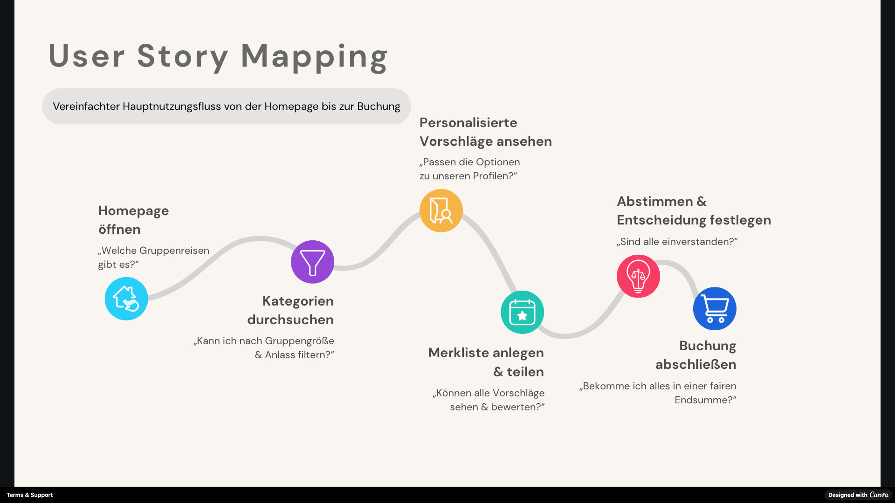
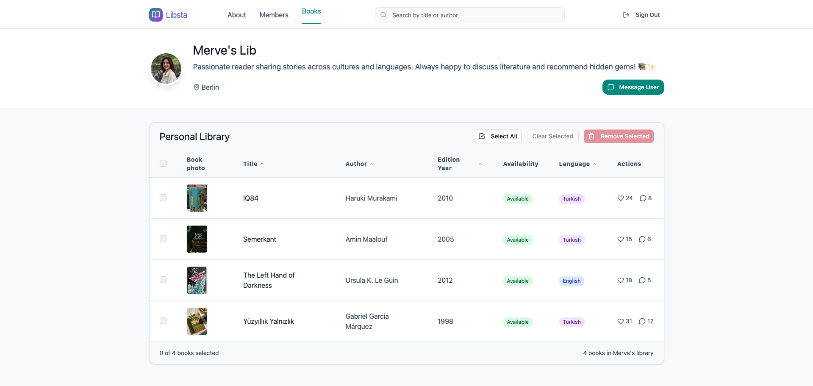
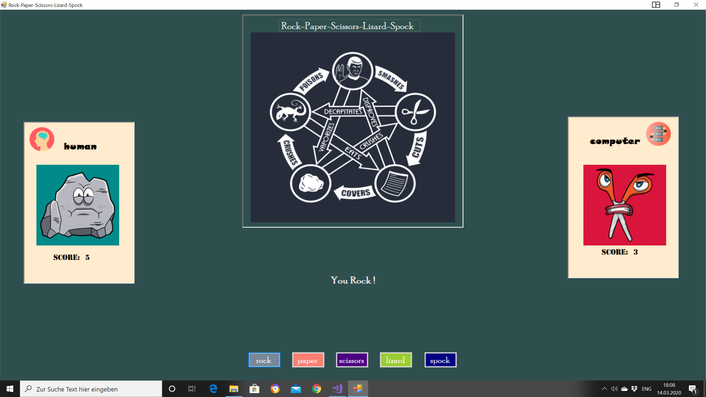
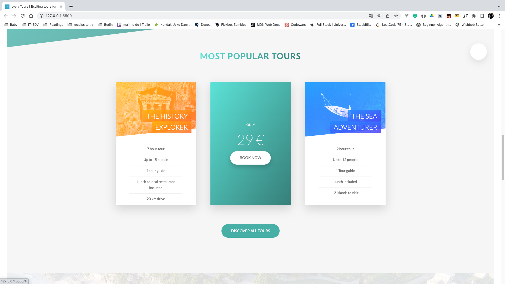

Journeo
End-to-end Product Management case study: defined product vision, personas, user story mapping, and created interactive prototypes with Canva & Figma.

End-to-end Product Management case study: defined product vision, personas, user story mapping, and created interactive prototypes with Canva & Figma.

Full-stack web app for book sharing. Designed database with MongoDB/Mongoose, implemented user interface in Vue.js, and built backend with Node.js.

Interactive desktop game programmed in C#. Showcases logic design, object-oriented programming, and graphical interface handling.

Promotional homepage for a tour company. Created with Sass for modular, maintainable styling and a clean, responsive layout.

Hi, my name is Günışığı — a Certified Product Manager with a programmer background, which basically means I speak both tech and people.
I hold an IHK Degree in Computer Science and a Bachelor’s in International Relations from Middle East Technical University, one of Türkiye's top universities. Along the way I studied and worked in German, English, Turkish, and French — becoming fluent in both code and cross-cultural collaboration (and the occasional confusion). After all these languages, I figured I’d give machine languages a try—turns out, they’re easier to debug.
Originally from Istanbul and raised in the beautiful coastal town of Fethiye, I spent years moving between 10 cities across 6 countries, working in Academia, Linguistics, Cinema, and Performing Arts before I traded scripts for scripts—the kind that actually compile.
Since 2019, I’ve built web applications in Germany, first in a structured, Scrum team at a mid-sized company, later in a fast-paced startup where ‘job description’ meant doing everything from writing tickets and testing features to coordinating developers and debating design. Somewhere along the way, I realized I wasn't just building products. I was also shaping how they were made.
Eventually, I made it official: earning a certificate in Agile Product & Project Management to combine my coding background with product strategy.
I like building products that work well, look good, and make sense. Of course, like every developer, I’ve broken a few things along the way — but those moments taught me that clearer communication and better alignment save far more time than debugging ever could.
📍 Always curious. Always up for meaningful challenges.